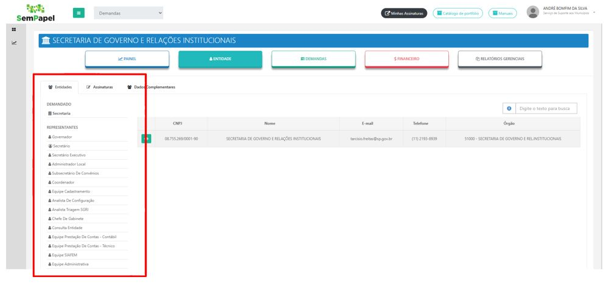

O cadastro ou a atualização cadastral do Prefeito eleito ou reeleito para acessar o Portal Sem Papel é realizado através da Subsecretaria de Convênios com Municípios e Entidades não Governamentais.
O município deverá encaminhar as solicitações e os documentos necessários (em papel timbrado, assinados e digitalizados) para o e-mail: crmc@sp.gov.br
Para mais informações e a lista dos documentos a serem apresentados, acessar o site: Clique aqui
A documentação será avaliada pela equipe da SGRI e efetuará o CADASTRAMENTO no sistema do CRMC. Em seguida, o sistema encaminhará uma mensagem para o e-mail do Prefeito, com instruções de acesso para a geração ou troca de senha. Se tiver algum problema com o e-mail de instruções de acesso, ou durante o cadastro da senha, é necessário entrar em contato com o Suporte da Prodesp - 0800 710 0064(*).
O primeiro passo é solicitar o cadastro do usuário no Sistema Sem Papel, através da área de suporte técnico do município ou do Suporte da Prodesp (*).
Após a confirmação deste cadastro no Sem Papel, o Prefeito deverá acessar o Sistema Sem Papel - Demandas e clicar no botão ENTIDADE (obs. você deve estar na visão SGRI).

Selecionar o Perfil do usuário a ser cadastrado:
Em seguida, clicar no botão INCLUIR. Preencher o número do CPF e completar os dados de cadastro, seguindo os procedimentos do Sistema Demandas.
Atenção: Este procedimento é realizado somente pelo Prefeito. O e-mail para cadastro no Sistema Demandas deve ser exclusivo para cada usuário, o sistema vinculará este e-mail ao CPF do usuário, não permitindo o uso do mesmo para outra pessoa.
Após a conclusão do cadastro, o usuário receberá um e-mail da Plataforma do Sistema Demandas com as instruções para acesso. Caso não receba, deverá entrar em contato com o Suporte Prodesp, através do número 0800 710 0064 ou suporte.prodesp.spsempapel@sp.gov.br.
O Suporte de Cadastro no Sistema Demandas é realizado somente pela PRODESP.